第 19 章 绘图及交互#
本章解决：OpenCV 的六个绘图函数——
line（直线）、rectangle（矩形）、circle（圆）、ellipse（椭圆）、polylines（多边形）、putText（文字）——都往一张"画布"数组上写像素，它们共享一组参数：color按 BGR 顺序、thickness取 -1 表示填充、lineType选 4/8 连接或抗锯齿、shift控制坐标精度。交互有两条机制：鼠标事件把窗口里的单击、双击、拖曳交给固定签名的回调函数，用setMouseCallback按窗口名绑定；滚动条用createTrackbar/getTrackbarPos在指定范围内取值，既能当调参面板实时调阈值、调 RGB 配色，也能当 0/1 开关。
运行环境约定
本章绝大多数例题的"画布"都是用 np.zeros / np.ones 现造的数组，不依赖素材文件；唯一读图的例 19.13，原书用 lena512.bmp，本章统一换成素材目录里的 picture1.jpg（灰度读入）。代码路径写作相对路径，运行时工作目录需为 数字图像处理-python 根目录，否则 imread 返回 None。
19.0 本章导图#
19.1 绘画基础#
OpenCV 提供了一组绘图函数：cv2.line() 绘制直线、cv2.rectangle() 绘制矩形、cv2.circle() 绘制圆、cv2.ellipse() 绘制椭圆、cv2.polylines() 绘制多边形、cv2.putText() 在图像内添加文字。这些函数有一些共有的参数：
| 参数 | 含义 |
|---|---|
img |
在其上面绘制图形的载体图像（绘图的容器载体，也称为画布（canvas）、画板），绘制结果直接写进这个数组 |
color |
绘制形状的颜色，通常用 BGR 模型表示，例如 (0, 255, 0) 是绿色；灰度图像只能传入灰度值。通道顺序是 BGR，不是 RGB |
thickness |
线条的粗细，默认 1；设置为 -1 表示填充（绘制的图形是实心的） |
lineType |
线条的类型，默认 8 连接类型，取值见表 19-1 |
shift |
数据精度，用来控制数值（例如圆心坐标等）的小数精度，一般不需要设置 |
表 19-1 lineType 参数的取值：
| 取值 | 说明 |
|---|---|
cv2.LINE_4 |
4 连接类型 |
cv2.LINE_8 |
8 连接类型（默认） |
cv2.LINE_AA |
抗锯齿（anti-aliasing），该参数会让线条更平滑 |
原书笔误：表 19-1 把 cv2.FILLED 列入 lineType
原书表 19-1 列出 cv2.FILLED（填充）作为 lineType 的取值。实测 cv2.FILLED == -1，它是 thickness 参数的取值（thickness=-1 时填充图形），不是传给 lineType 的——lineType 实际只在 LINE_4（4）、LINE_8（8）、LINE_AA（16）三者中选。
拓展：4 连接、8 连接与抗锯齿差别在哪
光栅线条由一串像素拼成。4 连接只允许像素水平、垂直衔接，斜线呈直角阶梯；8 连接允许斜向衔接（默认值），阶梯更缓；LINE_AA 对亚像素位置做加权平均，让边缘出现过渡灰度，放大看颜色浅一层，视觉上平滑无锯齿。小图细线用 AA 效果明显，粗线条差别不大。
三种 lineType 画同一条对角线的放大对比如下，直角阶梯、斜向阶梯与过渡灰度的差别一目了然：
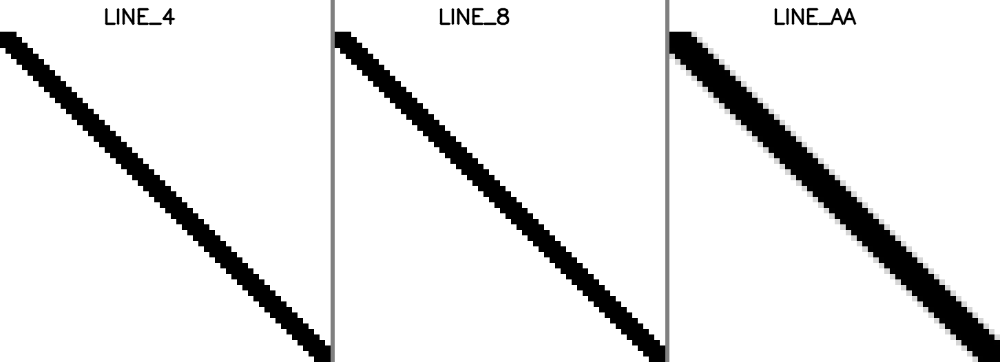
19.1.1 绘制直线#
OpenCV 提供了函数 cv2.line() 用来绘制直线（线段）。语法格式：
pt1：线段的第 1 个点（起点）；pt2：线段的第 2 个点（终点）；- 其余参数与共有参数含义相同。
【例 19.1】使用 cv2.line() 函数在一个黑色背景图像内绘制三条线段。
# ===== 19.1.1 例 19.1：黑色画布上画三条线 =====
import numpy as np
import cv2
n = 300
img = np.zeros((n+1, n+1, 3), np.uint8) # 301×301 的黑色画布（三通道）
img = cv2.line(img, (0, 0), (n, n), (255, 0, 0), 3) # 蓝色对角线：起点 (0,0)、终点 (300,300)、粗细 3
img = cv2.line(img, (0, 100), (n, 100), (0, 255, 0), 1) # 绿色水平线：第 100 行、粗细 1（默认粗细级别的细线）
img = cv2.line(img, (100, 0), (100, n), (0, 0, 255), 6) # 红色垂直线：第 100 列、粗细 6
winname = 'Demo19.1'
cv2.namedWindow(winname) # 先建窗口再显示，窗口名与 imshow 一致
cv2.imshow(winname, img)
cv2.waitKey(0) # 等待按键
cv2.destroyAllWindows()
程序在 img 中绘制了三条不同起始点、颜色和粗细的直线：蓝色对角线、绿色水平细线、红色垂直粗线。
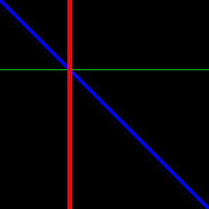
拓展：绘图是就地修改，返回值就是原数组
实测 out = cv2.line(img, ...) 后 out is img 为 True：所有绘图函数都直接把像素写进传入的画布，返回的是同一个对象，所以 img = cv2.line(img, ...) 的赋值可写可不写。反过来说，想在原图的副本上试画，要先 img.copy()，否则原图会被涂改。
19.1.2 绘制矩形#
OpenCV 提供了函数 cv2.rectangle() 用来绘制矩形。语法格式：
pt1：矩形的一个顶点；pt2：矩形中与pt1对角的顶点。
【例 19.2】使用函数 cv2.rectangle() 在一个白色背景图像内绘制一个实心矩形。
# ===== 19.1.2 例 19.2：白底画红色实心矩形 =====
import numpy as np
import cv2
n = 300
img = np.ones((n, n, 3), np.uint8) * 255 # 300×300 白色画布（全 1 数组乘 255）
img = cv2.rectangle(img, (50, 50), (n-100, n-50), (0, 0, 255), -1)
# 顶点 (50,50) 与对角顶点 (200,250)；红色；thickness=-1 → 实心填充
winname = 'Demo19.1' # 原书窗口名写成 Demo19.1，按章节应为 Demo19.2
cv2.namedWindow(winname)
cv2.imshow(winname, img)
cv2.waitKey(0)
cv2.destroyAllWindows()
程序绘制了一个红色的实心矩形（在纸质书中显示为灰色）。实心与空心只差一个 thickness：换成 2 就得到只有两像素宽边框的空心矩形，内部保持白色。
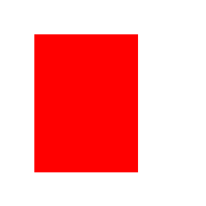
19.1.3 绘制圆形#
OpenCV 提供了函数 cv2.circle() 用来绘制圆。语法格式：
center：圆心；radius：半径。
【例 19.3】使用函数 cv2.circle() 在一个白色背景图像内绘制一组同心圆。
# ===== 19.1.3 例 19.3：一组红色同心圆 =====
import numpy as np
import cv2
d = 400
img = np.ones((d, d, 3), dtype="uint8") * 255 # 400×400 白色画布
(centerX, centerY) = (round(img.shape[1] / 2), round(img.shape[0] / 2))
# 将图像的中心作为圆心，实际值为 d/2 = (200, 200)；round 保证坐标是整数
red = (0, 0, 255) # 红色（原书注释误写为"设置白色变量"）
for r in range(5, round(d/2), 12): # 半径从 5 开始，每次加 12，最大到 197
cv2.circle(img, (centerX, centerY), r, red, 3)
# circle(载体图像，圆心，半径，颜色，粗细)；不传 thickness 时默认 1，这里用 3
cv2.imshow("Demo19.3", img)
cv2.waitKey(0)
cv2.destroyAllWindows()
程序绘制了一组同心圆。半径序列是 5, 17, 29, …, 197（公差 12），粗细固定为 3。
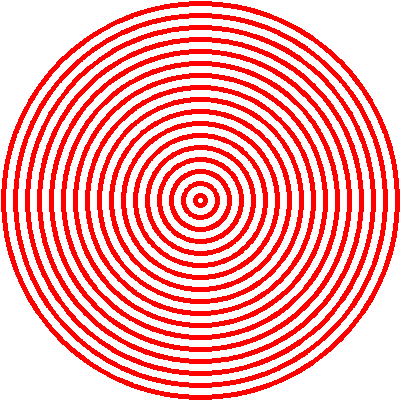
【例 19.4】使用函数 cv2.circle() 在一个白色背景图像内绘制一组位置和大小均随机的实心圆。
# ===== 19.1.3 例 19.4：100 个随机实心圆 =====
import numpy as np
import cv2
d = 400
img = np.ones((d, d, 3), dtype="uint8") * 255 # 生成白色背景
for i in range(0, 100): # 画 100 个圆
centerX = np.random.randint(0, high=d) # 随机圆心 x，范围 [0, 400)，确保在画布内
centerY = np.random.randint(0, high=d) # 随机圆心 y
radius = np.random.randint(5, high=d/5) # 随机半径，范围 [5, 80)，最大半径是 d/5
color = np.random.randint(0, high=256, size=(3,)).tolist()
# 随机颜色：3 个 [0,256) 的随机数；tolist 转成 Python 列表再传给 circle
cv2.circle(img, (centerX, centerY), radius, color, -1)
# thickness=-1：实心
cv2.imshow("demo19.4", img)
cv2.waitKey(0)
cv2.destroyAllWindows()
程序在画布中绘制了一组随机的实心圆。np.random.randint 的上界 high 取不到：high=256 才能产生 255 的颜色分量。
19.1.4 绘制椭圆#
OpenCV 提供了函数 cv2.ellipse() 用来绘制椭圆。语法格式：
center：椭圆的中心坐标；axes：轴的长度（横轴半径、竖轴半径）；angle：偏转的角度；startAngle：圆弧起始角的角度；endAngle：圆弧终结角的角度。
OpenCV 官网对上述参数的含义做了配图说明，可进一步了解。
【例 19.5】使用函数 cv2.ellipse() 在一个白色背景图像内随机绘制一组空心椭圆。
# ===== 19.1.4 例 19.5：10 个随机旋转、随机颜色的空心椭圆 =====
import numpy as np
import cv2
d = 400
img = np.ones((d, d, 3), dtype="uint8") * 255 # 生成白色背景
center = (round(d/2), round(d/2)) # 椭圆中心 (200, 200)
# 注意数值类型：不可以写 center=(d/2, d/2)，浮点坐标会报错
size = (100, 200) # 轴的长度：横轴半径 100、竖轴半径 200
for i in range(0, 10): # 画 10 个椭圆
angle = np.random.randint(0, 361) # 偏转角度，范围 [0, 361)
color = np.random.randint(0, high=256, size=(3,)).tolist()
# 随机颜色，3 个 [0,256) 的随机数
thickness = np.random.randint(1, 9) # 随机线条粗细，范围 [1, 9)
cv2.ellipse(img, center, size, angle, 0, 360, color, thickness)
# 起始角 0、终结角 360：完整椭圆
cv2.imshow("demo19.5", img)
cv2.waitKey(0)
cv2.destroyAllWindows()
程序绘制了一组随机的空心椭圆：中心固定，形状固定（横轴 100、竖轴 200），角度、颜色、粗细随机。
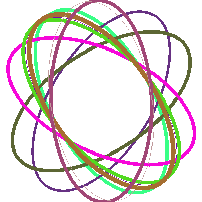
拓展：startAngle 与 endAngle 画的是弧段
两个角度的单位是度。0° 指向正右方，角度沿 y 轴向下的坐标系顺时针增长（实测画 0°~90°，绿色像素只落在椭圆中心的右下方四分之一区）。所以 startAngle=0, endAngle=360 是完整椭圆；改成 0~90 只画一段弧，配合不同的起始角可以拼出饼状扇区。例 19.5 正是靠 0, 360 保证画的是完整椭圆。
19.1.5 绘制多边形#
OpenCV 提供了函数 cv2.polylines() 用来绘制多边形。语法格式：
pts：多边形的各个顶点；isClosed：闭合标记，用来指示多边形是否封闭。若该值为True，则将最后一个点与第一个点连接，让多边形闭合；否则仅仅将各个点依次连接起来，构成一条曲线。
使用 cv2.polylines() 绘制多边形时，需要给出每个顶点的坐标。这些点的坐标构建了一个大小等于"顶点个数 × 1 × 2"的数组，这个数组的数据类型必须为 numpy.int32。
【例 19.6】使用函数 cv2.polylines() 在一个白色背景图像内绘制一个多边形。
# ===== 19.1.5 例 19.6：封闭的绿色菱形 =====
import numpy as np
import cv2
d = 400
img = np.ones((d, d, 3), dtype="uint8") * 255 # 生成白色背景
pts = np.array([[200, 50], [300, 200], [200, 350], [100, 200]], np.int32)
# 生成各个顶点，注意数据类型必须为 int32
pts = pts.reshape((-1, 1, 2))
# 第 1 个参数为 -1，表示该维度由其他参数自动推算，结果形状是 (4, 1, 2)
cv2.polylines(img, [pts], True, (0, 255, 0), 8)
# 第 2 个参数是"顶点数组的列表"——一次可以画多条多边形
# 第 3 个参数 True 控制多边形封闭；绿色；粗细 8
cv2.imshow("demo19.6", img)
cv2.waitKey(0)
cv2.destroyAllWindows()
程序绘制了一个封闭的多边形（菱形）。
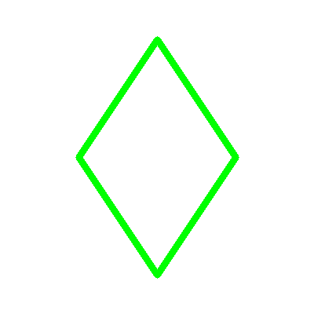
第 3 个参数 isClosed 是闭合标记，将该值设置为 False 时，仅仅将各个顶点用线段连接，多边形是不封闭的：
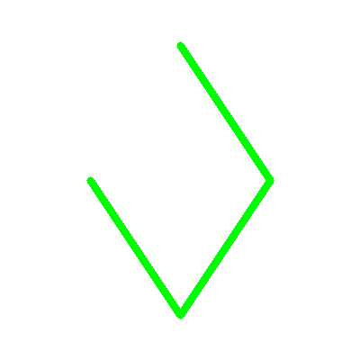
因此，可以使用函数 cv2.polylines() 来绘制多条首尾相连的线段：只要把线段的各个点放在一个数组中，将这个数组传给函数 cv2.polylines() 的第 2 个参数 pts 就可以了。
拓展：reshape((-1,1,2)) 到底做了什么
顶点数组 (4, 2) 的 4 行每行是一个 (x, y) 坐标；reshape((-1, 1, 2)) 把它变成 (4, 1, 2)——4 个点、每点 1 组坐标、每组 2 个数。OpenCV 要求 polylines 的顶点按"点数 × 1 × 2"的三维 int32 数组组织，-1 让 NumPy 自动算出点数。多条多边形可以各自 reshape 后放进列表：cv2.polylines(img, [pts1, pts2], True, color) 一次画完。
拓展：要实心多边形用 fillPoly
polylines 只描边，不管 thickness 多粗内部都是空的。想用同一组顶点填充，用 cv2.fillPoly(img, [pts], color)。实测同一组菱形顶点：polylines（粗细 8）画出约 6168 个绿色像素，fillPoly 填出约 30301 个——线条面积与填充面积差了约 5 倍。
19.1.6 在图形上绘制文字#
OpenCV 提供了函数 cv2.putText() 用来在图像上绘制文字。语法格式：
img = cv2.putText( img, text, org, fontFace, fontScale, color[, thickness[, lineType[, bottomLeftOrigin]]] )
text：要绘制的文字（字符串）；org：绘制文字的位置，以文字的左下角为起点；fontFace：字体类型，取值见表 19-2；fontScale：字体大小（缩放倍数）；bottomLeftOrigin：控制文字的方向。默认值False；设置为True时，文字是垂直镜像的效果；color、thickness、lineType与共有参数含义相同（原书此处把shift一并列进共有参数，但putText的参数表里并没有shift）。
表 19-2 参数 fontFace 的取值及含义：
| 取值 | 含义 |
|---|---|
cv2.FONT_HERSHEY_SIMPLEX |
正常大小的 sans-serif 字体 |
cv2.FONT_HERSHEY_PLAIN |
小号的 sans-serif 字体 |
cv2.FONT_HERSHEY_DUPLEX |
正常大小的 sans-serif 字体（比 FONT_HERSHEY_SIMPLEX 更复杂） |
cv2.FONT_HERSHEY_COMPLEX |
正常大小的 serif 字体 |
cv2.FONT_HERSHEY_TRIPLEX |
正常大小的 serif 字体（比 FONT_HERSHEY_COMPLEX 更复杂） |
cv2.FONT_HERSHEY_COMPLEX_SMALL |
FONT_HERSHEY_COMPLEX 字体的简化版 |
cv2.FONT_HERSHEY_SCRIPT_SIMPLEX |
手写风格的字体 |
cv2.FONT_HERSHEY_SCRIPT_COMPLEX |
FONT_HERSHEY_SCRIPT_SIMPLEX 字体的进阶版 |
cv2.FONT_ITALIC |
斜体标记（与其他字体按位或组合使用） |
【例 19.7】使用函数 cv2.putText() 在一个白色背景图像内绘制文字。
# ===== 19.1.6 例 19.7：两遍叠画实现描边 =====
import numpy as np
import cv2
d = 400
img = np.ones((d, d, 3), dtype="uint8") * 255 # 生成白色背景
font = cv2.FONT_HERSHEY_SIMPLEX # 选定字体
cv2.putText(img, 'OpenCV', (0, 200), font, 3, (0, 255, 0), 15)
# 文字 'OpenCV'，左下角在 (0,200)，缩放 3 倍，绿色，笔画粗细 15
cv2.putText(img, 'OpenCV', (0, 200), font, 3, (0, 0, 255), 5)
# 同一位置再画一遍：红色，笔画粗细 5——细笔画覆盖在粗笔画中间
cv2.imshow("demo19.7", img)
cv2.waitKey(0)
cv2.destroyAllWindows()
第 1 次调用绘制了宽度（由参数 thickness 控制）为 15 的文字"OpenCV"，第 2 次调用在第 1 次绘制的"OpenCV"内部绘制了稍细的宽度为 5 的"OpenCV"。两次颜色不一样，实现了文字的"描边"（outline）效果。
【例 19.8】使用函数 cv2.putText() 在一个白色背景图像内绘制一段镜像的文字。
# ===== 19.1.6 例 19.8：正常文字 + 垂直镜像文字 =====
import numpy as np
import cv2
d = 400
img = np.ones((d, d, 3), dtype="uint8") * 255 # 生成白色背景
font = cv2.FONT_HERSHEY_SIMPLEX
cv2.putText(img, 'OpenCV', (0, 150), font, 3, (0, 0, 255), 15)
# 上方：正常文字，左下角 (0,150)，红色，粗细 15
cv2.putText(img, 'OpenCV', (0, 250), font, 3, (0, 255, 0), 15,
cv2.FONT_HERSHEY_SCRIPT_SIMPLEX, True)
# 第 8 个位置参数是 lineType 槽：手写体常量（值 6）落在这里并不生效（见下方勘误）
# 第 9 个参数 True → bottomLeftOrigin，垂直镜像
# （原书窗口名写成 demo19.7，按章节应为 demo19.8）
cv2.imshow("demo19.7", img)
cv2.waitKey(0)
cv2.destroyAllWindows()
第 1 次调用绘制了上方正常显示的文字"OpenCV"；第 2 次调用时参数 bottomLeftOrigin 被设置为 True，实现绘制镜像文字效果，绘制了下方的倒置文字"OpenCV"。
原书笔误：例 19.8 的手写体参数放错了位置
putText 的参数顺序是 ..., color, thickness, lineType, bottomLeftOrigin。原书第 2 次调用把 cv2.FONT_HERSHEY_SCRIPT_SIMPLEX（值 6）放在了 lineType 槽上，字体并没有换成手写体。实测该写法与 lineType=cv2.LINE_8 的输出逐像素完全相同（非法线型值被按默认处理）；想真正用手写体，要把 fontFace 形参换成 cv2.FONT_HERSHEY_SCRIPT_SIMPLEX。镜像效果不受影响——True 落在正确的 bottomLeftOrigin 槽上。
拓展：org 是左下角，字母 p 会越过 org 往下伸
org 是文字的左下角（基线起点），而图像 y 轴向下，所以文字主体画在 org 上方。实测 fontScale=3、thickness=15 的 'OpenCV'，org=(0, 200) 时文字像素分布在第 129~229 行：主体向上伸展约 71 像素，字母 p 的下伸部（descender）越过 org 又向下伸约 29 像素。排版时给 org 的 y 值预留出这两段空间，文字才不会被裁掉。
拓展：putText 写不了中文
fontFace 的八种 Hershey 字体只内建 ASCII 字符集。cv2.putText(img, '中文', ...) 会把中文字符画成一串"?"。要在画面上写中文，常用做法是用 PIL 的 ImageDraw.text（先把 OpenCV 的 BGR 数组转成 PIL 图像，写完再转回来），或使用 opencv-contrib 扩展包的 cv2.freetype 模块加载 TTF 字体文件。
最后把六种绘图 API 画在同一张画布上，集中看一下各自的效果，方便互相对照：
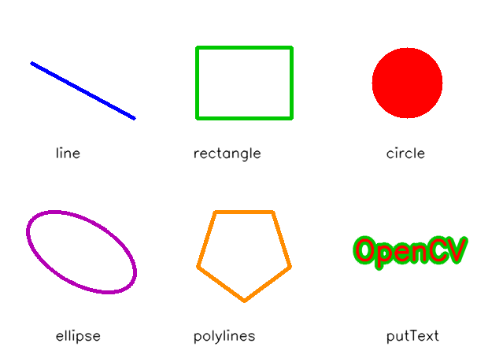
19.2 鼠标交互#
当用户触发鼠标事件（mouse event）时，希望程序对该事件做出响应。例如，用户单击鼠标，就画一个圆。通常的做法是创建一个 OnMouseAction() 响应函数（callback function，回调函数），将要实现的操作写在该响应函数内。响应函数按固定格式创建：
event：表示触发了何种事件，具体事件见表 19-3；x, y：触发鼠标事件时，鼠标在窗口中的坐标(x, y)；flags：代表鼠标的拖曳事件，以及键盘鼠标联合事件，见表 19-4；param：函数 ID，标识所响应的事件函数，相当于自定义一个OnMouseAction()函数的 ID；OnMouseAction：响应函数的名称，该名称可以自定义。
表 19-3 参数 event 的取值以及含义：
| 取值 | 含义 |
|---|---|
cv2.EVENT_LBUTTONDBLCLK |
双击左键 |
cv2.EVENT_LBUTTONDOWN |
按下左键 |
cv2.EVENT_LBUTTONUP |
抬起左键 |
cv2.EVENT_MBUTTONDBLCLK |
双击中间键 |
cv2.EVENT_MBUTTONDOWN |
按下中间键 |
cv2.EVENT_MBUTTONUP |
抬起中间键 |
cv2.EVENT_MOUSEHWHEEL |
滚轮横向滑动（正值和负值分别表示向左和向右滚动） |
cv2.EVENT_MOUSEMOVE |
鼠标滑动 |
cv2.EVENT_MOUSEWHEEL |
滚轮纵向滑动（正值和负值分别表示向前和向后滚动） |
cv2.EVENT_RBUTTONDBLCLK |
双击右键 |
cv2.EVENT_RBUTTONDOWN |
按下右键 |
cv2.EVENT_RBUTTONUP |
抬起右键 |
表 19-4 参数 flags 的取值及含义：
| 取值 | 含义 |
|---|---|
cv2.EVENT_FLAG_ALTKEY |
按下 Alt 键 |
cv2.EVENT_FLAG_CTRLKEY |
按下 Ctrl 键 |
cv2.EVENT_FLAG_LBUTTON |
左键拖曳 |
cv2.EVENT_FLAG_MBUTTON |
中间键拖曳 |
cv2.EVENT_FLAG_RBUTTON |
右键拖曳 |
cv2.EVENT_FLAG_SHIFTKEY |
按下 Shift 键 |
定义响应函数以后，要将该函数与一个特定的窗口建立联系（绑定），让该窗口内的鼠标触发事件时，能够找到该响应函数并执行。绑定通过函数 cv2.setMouseCallback() 实现：
winname：绑定的窗口名；onMouse：绑定的响应函数名。
【例 19.9】设计一个程序，对触发的鼠标事件进行判断。
# ===== 19.2 例 19.9：判断触发了哪种鼠标事件 =====
import cv2
import numpy as np
def Demo(event, x, y, flags, param):
# 回调签名固定：事件、坐标 x、坐标 y、flags、param
if event == cv2.EVENT_LBUTTONDOWN: # 事件：按下左键
print("单击了鼠标左键")
elif event == cv2.EVENT_RBUTTONDOWN: # 事件：按下右键
print("单击了鼠标右键")
elif flags == cv2.EVENT_FLAG_LBUTTON: # flags：左键处于按下状态（拖曳中）
print("按住左键拖动了鼠标")
elif event == cv2.EVENT_MBUTTONDOWN: # 事件：按下中间键（滚轮）
print("单击了中间键")
# 创建名称为 Demo 的响应（回调）函数
img = np.ones((300, 300, 3), np.uint8) * 255 # 300×300 白色画布
cv2.namedWindow('Demo19.9') # 先创建窗口
cv2.setMouseCallback('Demo19.9', Demo) # 将响应函数 Demo 与窗口"Demo19.9"绑定
cv2.imshow('Demo19.9', img)
cv2.waitKey()
cv2.destroyAllWindows()
运行程序，在创建的窗口 Demo19.9 内：
- 单击鼠标左键，会触发单击左键事件
cv2.EVENT_LBUTTONDOWN； - 单击鼠标右键，会触发单击右键事件
cv2.EVENT_RBUTTONDOWN； - 单击鼠标中间键（滚轮），会触发单击中间键事件
cv2.EVENT_MBUTTONDOWN； - 按住鼠标左键拖动鼠标，会依次触发单击左键事件
cv2.EVENT_LBUTTONDOWN和左键拖动事件cv2.EVENT_FLAG_LBUTTON。
先后单击左键、右键、滚轮、拖动鼠标，程序在控制台依次打印对应的提示文字。
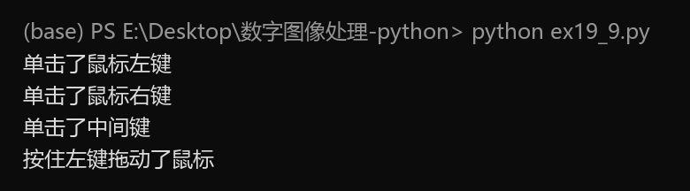
可以通过下面的方法查看 OpenCV 所支持的鼠标事件：
拓展：event 与 flags 都是位标志
实测 dir(cv2) 里 EVENT 开头的常量共 18 个，正好是表 19-3 的 12 个事件加表 19-4 的 6 个标志。flags 的本质是位掩码（左键 1、右键 2、中键 4、Ctrl 8、Shift 16、Alt 32），多个状态可以同时出现——比如按住 Ctrl 拖左键时 flags 同时含有左键位与 Ctrl 位，所以严谨的判断写法是按位与：flags & cv2.EVENT_FLAG_CTRLKEY。
拓展：param 可以给回调带参数
cv2.setMouseCallback(winname, onMouse[, param]) 还有第 3 个可选参数，它会原样传进回调的第 5 个形参 param。想把画布数组、窗口名等东西交给回调使用，走这个参数就不用依赖全局变量。
19.2.1 简单示例#
本节实现一个双击鼠标绘制矩形的简单程序。程序首先创建响应函数 draw()，在该函数内编写代码，实现：当双击鼠标时，以当前位置为顶点绘制大小随机、颜色随机的矩形。通过函数 cv2.setMouseCallback() 将函数 draw() 和新建窗口"Demo19.10"绑定。
【例 19.10】设计一个程序，当双击鼠标后，以当前位置为顶点绘制大小随机、颜色随机的矩形。
# ===== 19.2.1 例 19.10：双击画随机矩形 =====
import cv2
import numpy as np
d = 400
def draw(event, x, y, flags, param):
if event == cv2.EVENT_LBUTTONDBLCLK: # 只响应"双击左键"
p1x = x # 双击位置作为矩形顶点
p1y = y
p2x = np.random.randint(1, d-50) # 对角顶点横坐标随机
p2y = np.random.randint(1, d-50) # 对角顶点纵坐标随机
color = np.random.randint(0, high=256, size=(3,)).tolist()
# 颜色随机
cv2.rectangle(img, (p1x, p1y), (p2x, p2y), color, 2)
# 在画布 img 上画空心矩形（粗细 2）；img 是全局变量，回调里只读不写
img = np.ones((d, d, 3), dtype="uint8") * 255 # 白色画布
cv2.namedWindow('Demo19.10') # 先建窗口
cv2.setMouseCallback('Demo19.10', draw) # 绑定回调
while(1): # 交互主循环：持续刷新显示
cv2.imshow('Demo19.10', img) # 每圈重画一次窗口内容
if cv2.waitKey(20) == 27: # 等 20ms；Esc（ASCII 27）退出
break
cv2.destroyAllWindows()
运行程序，在图像内双击鼠标就会以当前位置为顶点绘制大小随机、颜色随机的矩形。图 19-11 是在图像的不同位置多次双击鼠标后的结果。
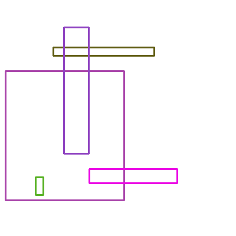
原书笔误：图 19-11 的图注
原书图 19-11 的图注写作"双击鼠标绘制圆形"。本例绘制的对象是矩形，与代码和图像内容一致，图注笔误。
19.2.2 进阶示例#
鼠标事件为用户与计算机之间的交互提供了接口，让用户能够非常灵活地与计算机之间实现交互。本节通过一个鼠标与键盘配合的例子，展示如何实现用户与计算机的交互。
【例 19.11】设计一个交互程序，通过键盘与鼠标的组合控制显示不同的形状或文字。
# ===== 19.2.2 例 19.11：键盘选模式 + 鼠标单击绘制 =====
import cv2
import numpy as np
thickness = -1 # 线条粗细：-1 实心；由 f/u 键切换
mode = 1 # 当前绘制模式：1 矩形、2 圆、3 线段、4 椭圆、5 文字
d = 400
def draw_circle(event, x, y, flags, param):
if event == cv2.EVENT_LBUTTONDOWN: # 每次单击左键触发一次绘制
a = np.random.randint(1, d-50) # 随机坐标（矩形对角点 / 线段端点共用）
r = np.random.randint(1, d/5) # 随机半径
angle = np.random.randint(0, 361) # 随机偏转角
color = np.random.randint(0, high=256, size=(3,)).tolist()
if mode == 1: # 模式 1：以 (x,y) 为顶点画矩形
cv2.rectangle(img, (x, y), (a, a), color, thickness)
elif mode == 2: # 模式 2：以 (x,y) 为圆心画圆
cv2.circle(img, (x, y), r, color, thickness)
elif mode == 3: # 模式 3：从 (a,a) 到 (x,y) 的线段
cv2.line(img, (a, a), (x, y), color, 3)
elif mode == 4: # 模式 4：以 (x,y) 为中心的椭圆
cv2.ellipse(img, (x, y), (100, 150), angle, 0, 360, color, thickness)
elif mode == 5: # 模式 5：写文字 'OpenCV'
cv2.putText(img, 'OpenCV', (0, round(d/2)),
cv2.FONT_HERSHEY_SIMPLEX, 2, color, 5)
img = np.ones((d, d, 3), np.uint8) * 255 # 白色画布
cv2.namedWindow('image')
cv2.setMouseCallback('image', draw_circle) # 绑定鼠标回调
while(1):
cv2.imshow('image', img)
k = cv2.waitKey(1) & 0xFF # 取按键 ASCII 码（低 8 位）
if k == ord('r'): # r → 矩形模式
mode = 1
elif k == ord('c'): # c → 圆模式
mode = 2
elif k == ord('l'): # l → 线段模式
mode = 3
elif k == ord('e'): # e → 椭圆模式
mode = 4
elif k == ord('t'): # t → 文字模式
mode = 5
elif k == ord('f'): # f → 实心
thickness = -1
elif k == ord('u'): # u → 空心（粗细 3）
thickness = 3
elif k == 27: # Esc 退出
break
cv2.destroyAllWindows()
按下不同按键后，单击鼠标左键会在窗口内绘制不同对象：
| 按键 | 单击左键后的行为 |
|---|---|
r |
以当前鼠标位置为顶点，以随机位置为对角顶点绘制矩形 |
c |
以当前鼠标位置为圆心，以随机数为半径绘制圆 |
l |
以当前鼠标位置为一个端点，以随机位置为另一端点绘制线段 |
e |
以当前鼠标位置为中心点，绘制角度随机的椭圆 |
t |
显示颜色随机的文字"OpenCV" |
f |
之后绘制的图形为实心（thickness=-1） |
u |
之后绘制的图形为空心（thickness=3） |
Esc |
退出循环，结束程序 |
拓展：waitKey(1) & 0xFF 的两处细节
& 0xFF 是按位与，取 waitKey 返回值的低 8 位——waitKey 的返回值不止 8 位，某些环境下高位非零，直接与 ord('r') 比较会失配。延时参数用 1 而不是 0：waitKey(1) 只等 1 毫秒就让循环转下一圈，保证鼠标画出的内容能立即刷新到窗口；waitKey(0) 则会无限期等待按键，循环就卡死了。退出键 Esc 的 ASCII 码是 27。
19.3 滚动条#
滚动条（Trackbar）在 OpenCV 中是非常方便的交互工具，它依附于特定的窗口而存在。通过调节滚动条能够设置、获取指定范围内的特定值。
在 OpenCV 中，函数 cv2.createTrackbar() 用来定义滚动条，其语法格式为：
trackbarname：滚动条的名称；winname：滚动条所依附窗口的名称；value：初始值，该值决定滚动条中滑块的位置；count：滚动条的最大值。通常情况下，其最小值是 0；onChange：回调函数。一般情况下，将滚动条改变后要实现的操作写在回调函数内。
拖动滚动条，就可以设置滚动条的值，并让滚动条返回对应的值。滚动条的值可以通过函数 cv2.getTrackbarPos() 获取，其语法格式为：
retval：返回值，获取cv2.createTrackbar()生成的滚动条的值；trackbarname：滚动条的名称；winname：滚动条所依附的窗口的名称。
19.3.1 用滚动条实现调色板#
在 RGB 颜色空间中，任何颜色都是由红（R）、绿（G）、蓝（B）三种颜色构成的，每一种颜色分量的区间是 \([0, 255]\)。本节用函数 cv2.createTrackbar() 和函数 cv2.getTrackbarPos() 设计一个模拟调色板（palette）：在窗体中，有三个滚动条分别用来设置 R、G、B 的值，调色板会根据当前的 R、G、B 值实时显示其所对应的颜色。
【例 19.12】设计一个滚动条交互程序，通过滚动条模拟调色板效果。
# ===== 19.3.1 例 19.12：三滚动条调色板 =====
import cv2
import numpy as np
def changeColor(x):
# 回调的形参 x 会收到"触发变化的那根滚动条"的当前位置，本例用不上它
r = cv2.getTrackbarPos('R', 'image') # 读取 R 滚动条当前值
g = cv2.getTrackbarPos('G', 'image') # 读取 G 滚动条当前值
b = cv2.getTrackbarPos('B', 'image') # 读取 B 滚动条当前值
img[:] = [b, g, r] # 整块画布刷成对应颜色；注意 OpenCV 是 BGR 顺序
img = np.zeros((100, 700, 3), np.uint8) # 100×700 的黑色画布
cv2.namedWindow('image') # 滚动条依附的窗口要先存在
cv2.createTrackbar('R', 'image', 0, 255, changeColor) # R 滚动条：初值 0，最大 255
cv2.createTrackbar('G', 'image', 0, 255, changeColor) # G 滚动条
cv2.createTrackbar('B', 'image', 0, 255, changeColor) # B 滚动条
while(1):
cv2.imshow('image', img) # 主循环持续显示
k = cv2.waitKey(1) & 0xFF
if k == 27: # Esc 退出
break
cv2.destroyAllWindows()
在窗体内分别调整 R、G、B 三个滚动条，画布颜色实时变化（图 19-13 中 R=223、G=163、B=83，画布呈现橙色）。
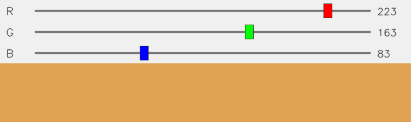
拓展：为什么回调里要主动读三次 getTrackbarPos
回调 changeColor(x) 只在"某一根滚动条变了"时被触发一次，触发时拿到的 x 只是那一根的值。另外两根的当前值必须用 getTrackbarPos 现读——三次都读一遍的写法最省心：无论动了哪根滚动条，三个分量都是新鲜的。整块画布赋值用 img[:] = [b, g, r]，比双重循环刷像素快得多。
19.3.2 用滚动条控制阈值处理参数#
本节设计一个程序，让不同的滚动条对应不同的响应函数，使滚动条具有更强的交互性。
【例 19.13】设计一个滚动条交互程序，通过滚动条控制函数 cv2.threshold() 中的阈值和模式。
首先，回顾一下函数 cv2.threshold() 的语法格式（第 6 章详讲）：
src：源图像；thresh：阈值；maxval：当type为THRESH_BINARY或THRESH_BINARY_INV时需要设定的最大值；type：阈值处理的方式（类型）；dst：处理结果；retval：返回的阈值。
根据题目的要求，编写代码如下（原书读入 lena512.bmp，本章换成 picture1.jpg）：
# ===== 19.3.2 例 19.13：滚动条控制阈值处理的类型与阈值 =====
import cv2
Type = 0 # 阈值处理方式（全局初始值，实际未起作用，见下方说明）
Value = 0 # 使用的阈值
def onType(a):
Type = cv2.getTrackbarPos(tType, windowName) # 函数内是局部变量：读出当前方式
Value = cv2.getTrackbarPos(tValue, windowName) # 读出当前阈值
ret, dst = cv2.threshold(o, Value, 255, Type) # 按当前参数做阈值处理
cv2.imshow(windowName, dst) # 显示处理结果
def onValue(a):
Type = cv2.getTrackbarPos(tType, windowName) # 与 onType 相同的逻辑
Value = cv2.getTrackbarPos(tValue, windowName)
ret, dst = cv2.threshold(o, Value, 255, Type)
cv2.imshow(windowName, dst)
o = cv2.imread("picture1.jpg", 0) # 灰度读入（原书 lena512.bmp）
windowName = "Demo19.13" # 窗体名
cv2.namedWindow(windowName)
cv2.imshow(windowName, o) # 先显示原图
# 创建两个滚动条
tType = "Type" # 用来选取阈值处理方式的滚动条
tValue = "Value" # 用来选取阈值的滚动条
cv2.createTrackbar(tType, windowName, 0, 4, onType) # Type：0~4 对应五种处理方式
cv2.createTrackbar(tValue, windowName, 0, 255, onValue) # Value：0~255 的阈值
if cv2.waitKey(0) == 27:
cv2.destroyAllWindows()
运行程序，窗体内同时显示控制阈值处理方式和阈值的两个滚动条。Type 滚动条的 0~4 依次对应 THRESH_BINARY、THRESH_BINARY_INV、THRESH_TRUNC、THRESH_TOZERO、THRESH_TOZERO_INV 五种处理方式；调整滚动条可以分别控制阈值处理时所使用的阈值和阈值处理方式，处理结果实时刷新在窗口里。
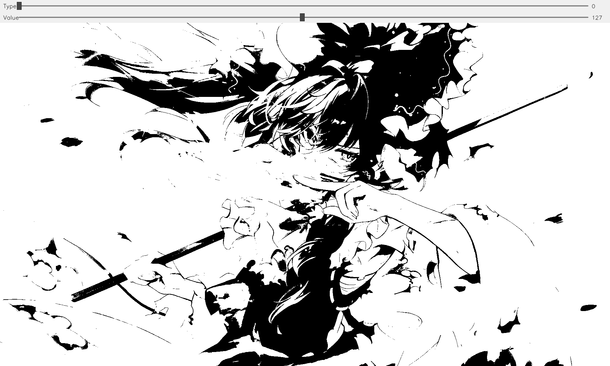
拓展：这段代码为什么没写 global 也能跑
onType/onValue 里对 Type、Value 直接赋值，Python 按规则把它们当成局部变量——读 getTrackbarPos → 赋值 → 立刻在 cv2.threshold 里使用，全程只用局部值，所以恰好能正常工作；函数开头那两行全局的 Type = 0、Value = 0 实际上从未被用到。这个写法很脆弱：只要在赋值之前先读一次 Type，就会触发 UnboundLocalError。要跨函数共享状态，规范写法是在函数内声明 global Type, Value。
19.3.3 用滚动条作为开关#
有时也可将滚动条作为"开关"（switch）使用。此时，滚动条只有两种值"0"和"1"：当滚动条的值为 0 时，代表 False；当滚动条的值为 1 时，代表 True。除了表示逻辑关系外，也可以让滚动条的 0 和 1 分别表示其他任意形式的两种不同状态。
【例 19.14】设计一个滚动条交互程序，用滚动条控制绘制的矩形是实心的还是空心的。
# ===== 19.3.3 例 19.14：滚动条当"实心/空心"开关 =====
import cv2
import numpy as np
d = 400
global thickness # 模块级声明（其实多余：主循环的赋值本身就是模块级）
thickness = -1 # 初始为实心
def fill(x):
pass # 开关的回调不需要做事，留空即可；取值在主循环里读
def draw(event, x, y, flags, param):
if event == cv2.EVENT_LBUTTONDBLCLK: # 双击左键触发绘制
p1x = x # 双击位置为矩形顶点
p1y = y
p2x = np.random.randint(1, d-50) # 对角顶点随机
p2y = np.random.randint(1, d-50)
color = np.random.randint(0, high=256, size=(3,)).tolist()
cv2.rectangle(img, (p1x, p1y), (p2x, p2y), color, thickness)
# thickness 由开关决定：-1 实心 / 2 空心
img = np.ones((d, d, 3), np.uint8) * 255 # 白色画布
cv2.namedWindow('image')
cv2.setMouseCallback('image', draw) # 绑定鼠标回调
cv2.createTrackbar('R', 'image', 0, 1, fill) # 滚动条"R"：0~1 两档，当开关用（原书命名）
while(1):
cv2.imshow('image', img)
k = cv2.waitKey(1) & 0xFF
g = cv2.getTrackbarPos('R', 'image') # 主循环里随时读开关状态
if g == 0:
thickness = -1 # 开关 0 → 实心
else:
thickness = 2 # 开关 1 → 空心
if k == 27: # Esc 退出
break
cv2.destroyAllWindows()
运行程序，调整滚动条（0 或 1），再双击鼠标，绘制的矩形随之在实心与空心之间切换。
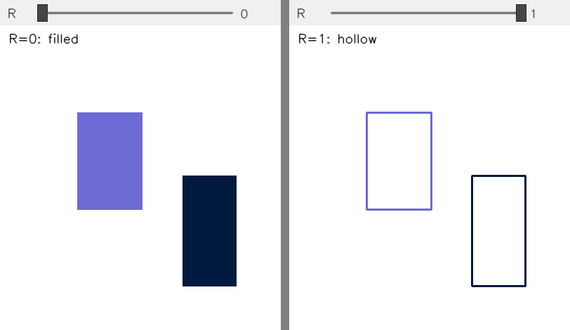
拓展：开关式滚动条的常见用法
"值域 0~1 + 空回调"的组合是一个轻量开关：0/1 之外，还可以让 0、1 代表任意两种状态（比如"显示原图/显示处理结果""进入/退出标定模式"）。相比再按一个键盘键，开关的好处是当前状态一目了然地写在界面上。例 19.14 里滚动条名叫 R，与"填充方式"无关，只是原书沿用的名字——自定义程序里建议取一个语义化的名字，如 Fill。
坑与陷阱#
8 个容易踩的坑
cv2.FILLED不是 lineType 的值：cv2.FILLED == -1，它属于thickness（-1 即填充）。原书表 19-1 把它列进 lineType 表里；lineType实际只在LINE_4、LINE_8、LINE_AA中选。- polylines 的顶点数组有硬性要求：类型必须
numpy.int32，形状必须"顶点数 × 1 × 2"。直接传 Python 列表或 float 数组会报错；reshape((-1, 1, 2))里的 -1 让 NumPy 自动推算点数。 - 颜色是 BGR 顺序：
(0, 255, 0)是绿色不是红色；调色板回写画布要写[b, g, r]。写颜色常量前先念一遍"蓝、绿、红"。 - putText 写不了中文：Hershey 字体只有 ASCII，中文字符一律画成"?"。需要中文时用 PIL 的
ImageDraw.text中转，或 opencv-contrib 的cv2.freetype模块。 - org 是文字左下角，不是左上角：文字主体画在 org 上方，p、g、y 这类带下伸部的字母还会越过 org 向下伸（实测 scale=3 时向上 71px、向下 29px）。y 给小了文字直接出画布。
- 回调按窗口名字符串绑定：
setMouseCallback、createTrackbar绑定的都是窗口名。窗口必须先namedWindow存在；imshow用的名字与绑定的名字差一个字母，回调就永远不触发。 - 回调里写全局变量要 global：只读全局（例 19.10 的
img）没问题；要赋值就必须在函数内声明global。例 19.13 没声明却"碰巧能跑"，是因为赋值后立即局部使用——照抄这个写法很容易踩UnboundLocalError。 - 交互程序的心跳是 while 循环：没有
while(1) + imshow + waitKey持续刷新，鼠标画的内容、滚动条调的颜色都不会出现在窗口里。循环内waitKey(1)给 1ms 延时，按键判断记得& 0xFF，Esc 的 ASCII 码是 27。
速览#
- 绘图函数族：
cv2.line()（直线）、cv2.rectangle()（矩形）、cv2.circle()（圆）、cv2.ellipse()（椭圆）、cv2.polylines()（多边形）、cv2.putText()（文字），都直接在传入的画布数组上就地作画。 - 共有参数：
color按 BGR 顺序；thickness默认 1、取 -1 表示填充实心；lineType默认 8 连接，可选LINE_4/LINE_8/LINE_AA（抗锯齿）；shift控制坐标精度，一般不设。 rectangle用两个对角顶点定框；circle给圆心与半径；ellipse给中心、轴长、偏转角、起始角、终结角（0~360 才是完整椭圆，弧段角度沿 y 向下的顺时针方向增长）。polylines的顶点必须是numpy.int32类型、形状"顶点数 × 1 × 2"的数组；isClosed=True封口、False只依次连线；要实心多边形用cv2.fillPoly。putText的org是文字左下角起点，fontFace是八种 Hershey 字体（仅 ASCII，不支持中文），fontScale是字号倍数；同位置先粗后细画两遍得到描边；bottomLeftOrigin=True得垂直镜像文字。- 鼠标回调签名固定为
(event, x, y, flags, param)；event判定单击/双击/移动（表 19-3 的 12 种），flags判定拖曳与 Ctrl/Shift/Alt 组合（位掩码，可按位与检测）。 cv2.setMouseCallback(winname, onMouse)把回调按窗口名绑定；窗口先namedWindow；dir(cv2)里 EVENT 开头的常量共 18 个。cv2.createTrackbar(trackbarname, winname, value, count, onChange)建滚动条，cv2.getTrackbarPos(trackbarname, winname)取当前值；改变时触发onChange回调。- 调色板：三根 0~255 的滚动条各自触发同一个回调，回调里三次
getTrackbarPos后img[:] = [b, g, r]整块刷色。 - 开关：
createTrackbar(..., 0, 1, 回调)只有两档，0 当 False、1 当 True（或任意两种状态），主循环里getTrackbarPos读取后切换行为，例 19.14 用它切换矩形实心/空心。
术语速查#
| 英文 / 函数 | 中文 | 一句话 |
|---|---|---|
| canvas | 画布 | 承接绘制结果的载体图像，就是一个 numpy 数组 |
| line | 直线 | cv2.line(img, pt1, pt2, color, thickness)，两点定线段 |
| rectangle | 矩形 | cv2.rectangle(img, pt1, pt2, ...)，两个对角顶点定框 |
| circle | 圆 | cv2.circle(img, center, radius, ...) |
| ellipse | 椭圆 | cv2.ellipse(img, center, axes, angle, startAngle, endAngle, ...) |
| polygon | 多边形 | cv2.polylines 按顶点数组连线绘制 |
| polyline | 多段线 | 顶点依次连接的折线，isClosed 控制是否封口 |
| fillPoly | 多边形填充 | cv2.fillPoly(img, [pts], color)，同顶点画出实心多边形 |
| thickness | 线条粗细 | 默认 1；-1 表示填充成实心 |
| lineType | 线条类型 | LINE_4/LINE_8/LINE_AA，默认 8 连接 |
| anti-aliasing | 抗锯齿 | LINE_AA 对边缘做亚像素平滑，线条更柔和 |
| shift | 数值精度 | 控制坐标的小数位数，一般不设 |
| putText | 绘制文字 | 在 org 处写字，Hershey 字体仅支持 ASCII |
| fontFace | 字体类型 | 八种 Hershey 字体 + FONT_ITALIC 斜体标记 |
| fontScale | 字号缩放 | 字体大小的倍数因子 |
| descender | 下伸部 | p、g、y 等字母越过基线（org）向下的部分 |
| outline | 描边 | 先粗后细叠画两遍文字形成的外轮廓效果 |
| mirror | 镜像 | bottomLeftOrigin=True 时文字垂直翻转 |
| mouse event | 鼠标事件 | 单击、双击、移动、滚轮等窗口内鼠标动作 |
| callback function | 回调函数 | 事件发生时被 OpenCV 调用的响应函数，签名固定五参数 |
| trackbar | 滚动条 | 依附窗口的取值滑块，createTrackbar 建、getTrackbarPos 取 |
| palette | 调色板 | 三根滚动条调 R、G、B 实时混色的交互面板 |
| switch | 开关 | 值域 0~1 的滚动条，两档表示两种状态 |
| bitwise flags | 位标志 | flags 是位掩码（左键 1、Ctrl 8……），按位与检测组合状态 |